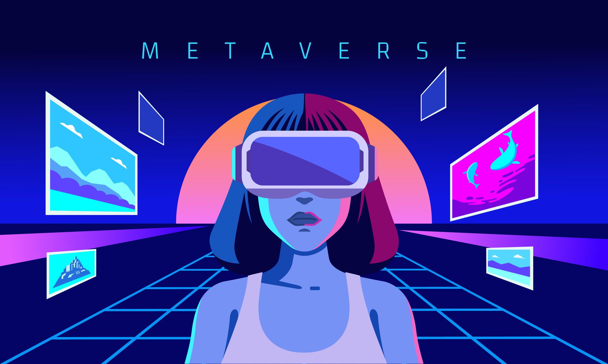

Sobre Metaverso
O termo "metaverso" refere-se a um conceito de um espaço virtual colaborativo e expansivo que incorpora o conceito de realidade virtual, redes sociais e mundos virtuais interconectados

Para que serve?
Socialização e Entretenimento: Espaço para jogos, eventos sociais, festas virtuais, concertos e experiências recreativas.
Colaboração e Trabalho Remoto: Ambiente para colaboração remota, reuniões e atividades de trabalho em equipe.
Educação e Treinamento: Ambientes virtuais para aulas, treinamentos, simulações e workshops.
Comércio Virtual: Oportunidades para comprar e vender produtos e serviços no ambiente digital.
Exploração Criativa: Ferramentas de criação para construir e explorar mundos virtuais, expressão artística e criação de conteúdo.
Saúde Mental e Bem-Estar: Espaço para atividades que promovem saúde mental, bem-estar e terapias virtuais.
Eventos Virtuais e Conferências: Realização de eventos e conferências virtuais com participantes de todo o mundo.
Desenvolvimento de Habilidades: Plataformas envolvendo jogos e simulações para o desenvolvimento de habilidades específicas.
Experimentação Tecnológica: Campo de experimentação para tecnologias emergentes como realidade virtual, realidade aumentada e inteligência artificial.
Participação em Economias Virtuais: Oportunidade de participar em economias virtuais, ganhando moedas ou ativos digitais.
Por que o metaverso é importante?
Conectividade Global: O metaverso permite a conexão de pessoas de todo o mundo, criando uma comunidade global virtual.
Novas Formas de Socialização: Oferece oportunidades para interações sociais em formatos inovadores, como jogos, eventos virtuais e espaços compartilhados.
Transformação no Trabalho: Facilita o trabalho remoto, colaboração eficiente e reuniões virtuais, transformando a dinâmica do trabalho.
Inovação Tecnológica: Impulsiona o desenvolvimento de tecnologias emergentes, como realidade virtual, realidade aumentada e inteligência artificial.
Educação Global Acessível: Torna a educação e o treinamento acessíveis globalmente, proporcionando experiências de aprendizado imersivas.
Oportunidades Econômicas: Cria oportunidades para negócios, comércio virtual, economias digitais e novos modelos de emprego.
Exploração Criativa: Fomenta a criatividade, permitindo que as pessoas construam e explorem mundos virtuais de maneiras inovadoras.
Avanços na Saúde Mental: Oferece opções para atividades que promovem o bem-estar mental, incluindo terapias e ambientes relaxantes.
Experiências Personalizadas: Proporciona experiências personalizadas, adaptadas aos interesses e preferências individuais.
Transformação Cultural: Contribui para uma transformação cultural ao redefinir a maneira como as pessoas interagem, trabalham e se divertem.